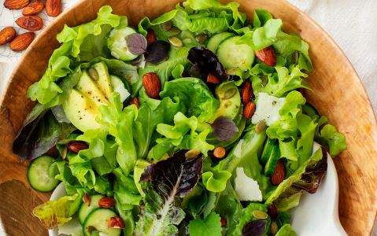

Health Plans According to calories
-

LOW CARBS(BEST FOR CUTTING)
Breakfast: Spinach and Mushroom Omelette Ingredients: 2 eggs Handful of spinach A few sliced mushrooms Salt and pepper to taste Olive oil for cooking Instructions: Beat the eggs in a bowl and season with salt and pepper. Heat a little olive oil in a non-stick pan over medium heat. Add the spinach and mushrooms to the pan and sauté until slightly wilted. Pour the beaten eggs over the vegetables and cook until the omelette is set. Flip the omelette to cook the other side briefly. Serve hot.
Lunch: Grilled Chicken Salad Ingredients: Grilled chicken breast (4-6 oz) Mixed salad greens Cucumber, sliced Cherry tomatoes, halved Avocado, sliced Olive oil and vinegar dressing (low-carb) Instructions: Place the mixed salad greens in a bowl. Top with grilled chicken breast, cucumber, cherry tomatoes, and avocado slices. Drizzle with olive oil and vinegar dressing. Toss gently to combine. Enjoy your delicious low-carb chicken salad.
Dinner: Baked Salmon with Steamed Broccoli Ingredients: Salmon fillet (4-6 oz) Lemon juice Salt and pepper to taste Fresh dill (optional) Broccoli florets Instructions: Preheat the oven to 400°F (200°C). Place the salmon fillet on a baking sheet lined with foil. Squeeze lemon juice over the salmon and season with salt, pepper, and fresh dill (if desired). Bake for about 12-15 minutes or until the salmon is cooked through. Meanwhile, steam the broccoli until tender. Serve the baked salmon with steamed broccoli on the side. -
hIGH CARBS(BEST FOR MASS GAIN)
Breakfast: Overnight Oats with Berries Ingredients: 1/2 cup rolled oats 1 cup almond milk (or any milk of your choice) 1 tablespoon chia seeds 1 tablespoon honey or maple syrup Fresh berries (strawberries, blueberries, raspberries) Instructions: In a jar or bowl, combine the rolled oats, almond milk, chia seeds, and honey or maple syrup. Stir well to mix all the ingredients thoroughly. Cover the jar or bowl and refrigerate overnight. In the morning, give the mixture a good stir and top with fresh berries. Enjoy your high-carb breakfast of creamy overnight oats with a burst of fruity goodness.
Lunch: Quinoa Salad with Chickpeas and Veggies Ingredients: 1 cup cooked quinoa 1 cup cooked chickpeas Mixed vegetables (such as bell peppers, cucumber, cherry tomatoes, red onion) Fresh herbs (such as parsley or cilantro), chopped Lemon juice Olive oil Salt and pepper to taste Instructions: In a large bowl, combine the cooked quinoa, chickpeas, mixed vegetables, and fresh herbs. Drizzle with lemon juice and olive oil. Season with salt and pepper to taste. Toss well to coat all the ingredients with the dressing. Serve chilled as a refreshing high-carb salad.
Dinner: Sweet Potato and Black Bean Burrito Bowl Ingredients: 1 medium-sized sweet potato, cubed 1 cup cooked black beans Mixed salad greens Sliced avocado Salsa or hot sauce (optional) Greek yogurt or sour cream (optional) Instructions: Preheat the oven to 400°F (200°C). Place the cubed sweet potato on a baking sheet lined with foil. Drizzle with olive oil and sprinkle with salt and pepper. Bake for about 20-25 minutes or until the sweet potato is tender. In a bowl, layer the mixed salad greens, cooked black beans, roasted sweet potato, and sliced avocado. Top with salsa or hot sauce and a dollop of Greek yogurt or sour cream if desired. Mix everything together and enjoy your hearty high-carb burrito bowl. -
All TIME DIET(FOR GOOD HEALTH)
Breakfast: Greek Yogurt Parfait Ingredients: 1 cup Greek yogurt Fresh berries (such as strawberries, blueberries, raspberries) 1 tablespoon honey or maple syrup Granola (look for a lower sugar option) Instructions: In a glass or bowl, layer Greek yogurt, fresh berries, and a drizzle of honey or maple syrup. Top with a sprinkle of granola for added crunch. Repeat the layers if desired. Enjoy your delicious and satisfying medium-carb breakfast parfait.
Lunch: Grilled Chicken Wrap Ingredients: Grilled chicken breast (4-6 oz), sliced Whole wheat wrap or tortilla Mixed salad greens Sliced cucumber Sliced tomatoes Greek yogurt or hummus (as a spread) Instructions: Lay the whole wheat wrap or tortilla on a clean surface. Spread a thin layer of Greek yogurt or hummus on the wrap. Layer the sliced grilled chicken breast, mixed salad greens, sliced cucumber, and sliced tomatoes on the wrap. Roll up tightly and cut in half, if desired. Enjoy your flavorful and balanced medium-carb chicken wrap.
Dinner: Shrimp Stir-Fry with Brown Rice Ingredients: 8-10 large shrimp, peeled and deveined Assorted vegetables (such as bell peppers, broccoli, carrots, snap peas) Low-sodium soy sauce or tamari Garlic, minced Ginger, grated Sesame oil Cooked brown rice Instructions: Heat sesame oil in a large skillet or wok over medium-high heat. Add minced garlic and grated ginger, and sauté for a minute until fragrant. Add the shrimp and stir-fry until pink and cooked through. Remove from the skillet and set aside. In the same skillet, add the assorted vegetables and stir-fry until crisp-tender. Return the cooked shrimp to the skillet and pour in low-sodium soy sauce or tamari, tossing to coat everything evenly. Serve the shrimp stir-fry over a bed of cooked brown rice. Enjoy your satisfying and medium-carb dinner.